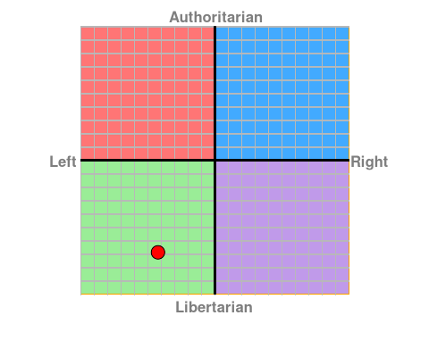

Rookie mistake #17: Total failure to avoid religion and politics on a night out
Last weekend I was in Edinburgh for Mark's stag do (Just in case any Americans stuble upon this site, that's pronounced "Edd-inn-bur-huh". What? Someone needs to let 'em know they've spelled Pittsburgh wrong).
Now Mark is officially classed amongst the brighest people I've ever met, as were many of the esteemed invitees to this stag do and then, of course, there was me (there must have been a spare place). Now I have to admit, before I started working at Sheffield, I considered myself to be a smart lad (If you want to go by IQ, my current best is 138), but when these guys get together in conversation, I suddenly feel like the thicky. I wouldn't mind but they can all pass as normal. Not a nerd in sight. This is a good thing really - it shows there's hope for humanity yet.
So what happens when you get that many PhDs in a room together? Do they talk about art? Philosphy? The latest developments in nanotechnology? The current socio-political climate in Burma?
Nope.
They all got drunk* and talked about boobs.
There was, however, a point that totally let the side down and betrayed our true geek colours. Mid-way through the first night and the sixth pint, Charles (who point blank refuses to be called Charlie) mentioned that he happened to be a libertarian. Now this doesn't seem to be the sort of thing that is usually mentioned in everyday conversation (or maybe it was?), but for the life of me I can't remember how it came up. First of all I thought it was strange that he was moon-lighting as a bookshelf-stacker until the concept was explained to me**. We were curious, we asked a few questions.
DISCLAIMER: As this will be linked into Facebook, it is possible that Charles will read it. I hope he does, but I just want to state that I write the following intending no offence to him, what so ever. It's typically the case that when a sentence starts with "With all due respect", it's not going to be particularily respectful and in the same vein, by writing, "No offence but..." everyone can tell that this isn't going to be a love letter. I like the guy and don't want to offend him, but he did raise some points of view which are polar opposite to what I believe and I'd like to discuss it. In fact, I haven't met anyone with such a fundamentally opposing view point since I tried to use logic and reasoned argument to sleep with a girl called Zoe in my lab practical at uni (Logically speaking, sleeping with me was the only sensible outcome, but she refused to on the grounds that she didn't fancy me - oh, and possibly also because I was trying to use logic and reasoned argument to sleep with her. Girls don't like that apparently.). Anyway, I think I made it perfectly clear that I disagreed with him over the weekend and I'm sure that he won't mind me putting those thoughts down in print. My point is that if any offence is taken by any of the following then that's due to my failure as a writer and doesn't represent any malice towards the guy. In fact, I'll show this blog entry to him before I post it and give him a chance to respond to defend his position and I'll remove anything he doesn't like. Can't say fairer than that.
Right, now that I've said that:
Fucking hell, that man talks some shit!
I don't know if he's been watching far too many John Wayne films, but he seemed to think that we would all be safer if we carried around a gun all day. He even used the phrase "Guns don't kill people, people kill people" (This has always struck me as the most compelling reason NOT to arm them). No Charles, people holding guns kill people, whereas people not holding guns merely give them a black eye. By carrying a gun, you are raising the stakes, and if he thinks this will protect him from criminals then think about this: your average person without the element of surprise on their side would be more reluctant to use a gun than a heroin-addicted mugger who wants your ipod so he can trade it in for his next fix and doesn't care how he gets it. I'm jumpy enough about the police waving them around as it is without worrying about gun-toting mentalists roaming the streets. Besides, I have a history of being somewhat accident-prone and knowing me I'll end up assassinating some old lady while trying to answer my phone.
See? Anyway, he didn't.
It wasn't just the gun thing, there was loads more, but the beers kept on flowing and it has been over a week now***, so forgive me if my memory is a little hazy. It probably involved giving corporations total freedom to exploit at will and abolishing the government and all laws except when someone commits a murder (with a gun, no doubt) and all sorts of crap like that. His line of argument seemed to be one of the means being completely justified by the end and self-preservation at the expense of everyone else, which seems to be the very opposite goals to that of society as a whole. Society, and here I refer to society as the meme and as the genes for perpetuating society, has evolved because we are stronger as a group. From a purely evolutionary stand-point, if acting alone conferred an advantage over group-living, then group-living would not have been selected for and we would be solitary animals. As it is, we are a social species (a 'party animal' if you will) and (most of) our brains are wired for altruism. This suggests that "united we stand, divided we fall" is as true as it ever was.
Libertarisnism - pah! Even the name is a farce. It implies liberty, but it's only liberty for those whose great-grandparents could afford it. It just sounds to me like an excuse for the rich getting richer (I think he thinks that the poor don't try hard enough) while corruption and poverty become rife.
So, where the hell is he coming from? To be honest with you, and fair to Charles, I think that I've not fully grasped the concept, because Charles is a very intellegent person and has obviously thought about this a lot, so I'm hoping that he knows something I don't here. Because if that's not the case, be afraid, for this anarchist is not alone: I just did a quick google search for libertarianism and I stumbled upon this book called Libertarianism In One Lesson" by some bloke called David Bergland. This is just the first one I found, but seeing as though it was at the top of Google, it seems a fair place to start. Here are a few brief snippets from the synopsis that I hope fairly reveals this mode of thought:
Find out why Big Macs and hip hop music may be America's most powerful weapons against foreign dictators. Why we don't need to worry about aggressors seizing Middle Eastern oil.
("Seizing" ? Isn't it theirs already? I thought the Americans were only meant to be customers)
Get convincing proof that public schools are what poor parents settle for -- not what they would freely choose.
(By which, I assume he's referring to state funded schoools)
Find out why government welfare programs perpetuate poverty... (Did you know: America's poor have a higher standard of living than the average middle-class American family had in the 1970s?
Find out how guns make you safer -- even if you don't own one.
Whether this is the de facto libertarian mentality or just one American nutcase, I don't know, but it is very reminiscent of the crap Charles was gibbering on about. Anyway, he and Jon were arguing about it for hours and Charles, who was no match for Jon in the debating arena and got mercilessly ripped to shreds (although this was from my terribly biased perspective), and yet still he dearly holds on to his beliefs. I'm not sure whether I respect that or not. I think not.
By the end of the night, it seemed to be getting nasty, and I did feel sorry for him. I was temped to tell Jon to leave him alone and it's not his fault that Oxford and Cambridge has warped his poor suggestable mind, but then I remembered that if he got his way and we lived in his dog-eat-dog ultra-libertarian/utilitarian world, he'd shoot us on sight without batting an eye-lid, just so he could use the flesh on our bones to feed himself, whilst simultaneously helping the environment by easing overpopulation, so I didn't really have much sympathy.
Actually, some of this stems from disappointment I guess. Charles was part of the ABRG computer revolution where a huge crowd (three) of us switched from using windows to using linux. I took this to imply that he understood the power of the people and the benefits of working together in a society, etc etc, but he's actually an uber capitalist. I'm not sure what that makes me.
Strangely, I find myself becoming more and more interested by politics these days. Previously I had always avoided it because everywhere I looked I saw corruption. Not the big corruption like you get in poorer contries, but small scale corruption where elected officials don't act independently but fall in line with a party, which only cares about getting re-elected. These lies and diappointments prevent real progress from happening and so it had always been the reason why I felt so disconnected by it. I think we all know I'm not alone with this one though.
Since taking up programming, however, I find myself drawn to politics for the very same reasons, only this time it's to do something about it. I now believe that by learning from the open-source model, we can use the internet as the base of a true democracy where the people are fully represented, because it is they themselves that will be making the decisions. I knew that there was definately a better way of doing things, but was still lost for a definition. I initially started to think that I might be a closet communist, but after a little research, I find that I'm definately not that because I'm totally against the whole being ruled by a single party thing. I want freedom and democracy too. In fact, I want more than democracy. Communism was a bit of a half-arsed effort, but I reckoned I was definately still over in the lefty, socialist camp. So I took this mini political quiz and here are the results:

Economic Left/Right: -4.25 Social Libertarian/Authoritarian: -6.87
This plonks me squarly in the box with Gandhi, Nelson Mandella and The Dalai Lama. I can live with that.
According to this very simple measure, I'm liberal but not libertarian. Okay, great, but I already knew that. So what's the difference between these two concepts? To me, it's as if being liberal means that you believe that by embracing society you can build a better world where everyone is happy, but if you continue down that path to the extreme of the scale and become a libertarian, then you just kinda give up on society and want everyone to leave you alone else you'll shoot them for being on your land.
Right, so I'm a liberal, but there's more to it than that and of the little research I've done so far, I think I might have even found it. What I am seems to be included within, but not limited to, "open-source governance", "democracy", "e-democracy", "direct democracy", "consensus-based decision-making", and "radical transparency". Check 'em out on wikipedia. The way I see it is by using the internet - a new tool that will prove to be as, if not more, liberating than the printing press - we might be able to fix the system. I have begun to feel less disillusioned as a problem with a solution (that is currently being ignored) is a lot more interesting to me. Fortunately, it looks like I don't have to start from scratch then. Phew. I keep coming across someone else with a similar viewpoint as well, called Mitch Kapor (the guy who founded the software company, Lotus). Here (and here) are some of his thoughts which seem far more succinct than my own.
I think we can all safely assume that this won't be the last you hear from me on this. I'll get back to you after I look into it some more... unless Charles shoots me first, that is...
* - Included in this number was a smashing lad who was a lecturer of the psychology of why the British public binge drink. So as you may or may not know, I've been blogging along similar lines. Despite this, we all got hammered. Such is life.
** - Okay, so that's not entirely true, I knew what one is because my mate Pete also claims to be one, but this is the first time I've got into it in-depth. Hang on, he went to an elitist uni as well (London School of Economics) - I'm beginning to suspect a southern plot to head-fuck students into peddling this shite.
*** - I know, I'm a bad blogger, but this site is turning into a collection of time-stamped essays rather than daily posts, so somethings gotta give...